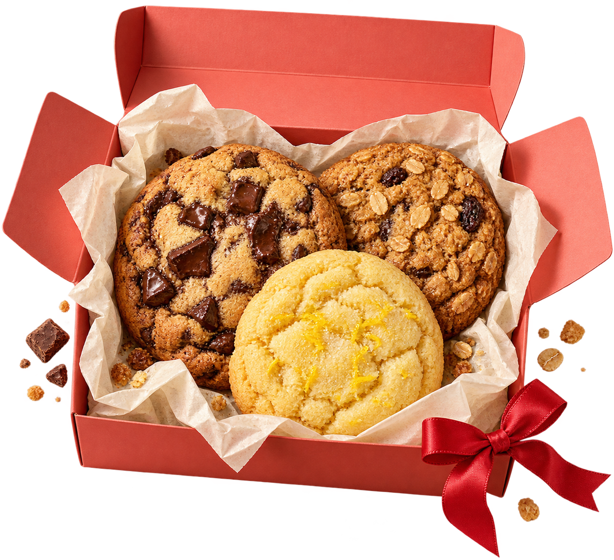

CRUMB / 一点屑
10 / 10
看布局骨架
设计拆解 ↗
↖ 案例集
SMALL BATCH / BIG LITTLE JOYS
刚出炉的
小幸福！
今天，也认真烤过了。
一张来自烤箱边的便条
边缘微脆，
里面柔软。
不需要一个特别的理由。
给忙碌的一天，
一点点甜。
✦ 小批烘焙
▣ 点心盒自选
打开我的点心盒
↗
对比：暂时收起小装饰

有一点碎屑，
才像真的快乐。 ↙
BAKED
WITH
LOVE ♡
01
挑三种喜欢的，就很好。
不用纠结，
喜欢可以都要 ↘
1.
海盐巧克力
微咸、浓郁，有一点点任性
−
1
+
2.
焦糖燕麦
烘烤谷物香，适合慢慢嚼
−
1
+
3.
柠檬白巧
明亮酸甜，像一个小晴天
−
1
+
02 / YOUR LITTLE JOYS
3
块 / 演示金额
¥
36
每块 ¥12 · 无真实下单与配送
LAYOUT / 10
细节形成可开关的品牌语气
返回完整效果 ×
×